社会人の切実な悩みを解決する案内サイト
住民票取得アシスト
2年次前期の授業「Webデザイン演習」で個人制作したWebサイトです。
「多忙で中々時間を確保できない」といった課題を抱えている社会人をターゲットとし、わずかなタップ数で求めている情報に素早くアクセスできるUIを目指しました。
使用ツール
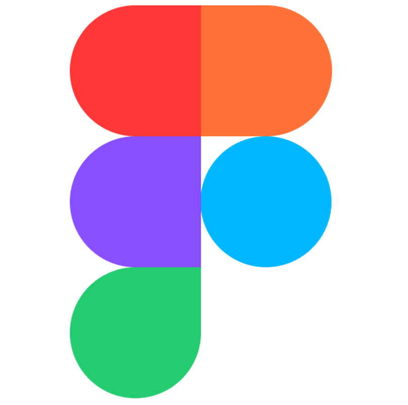
Figma HTML
HTML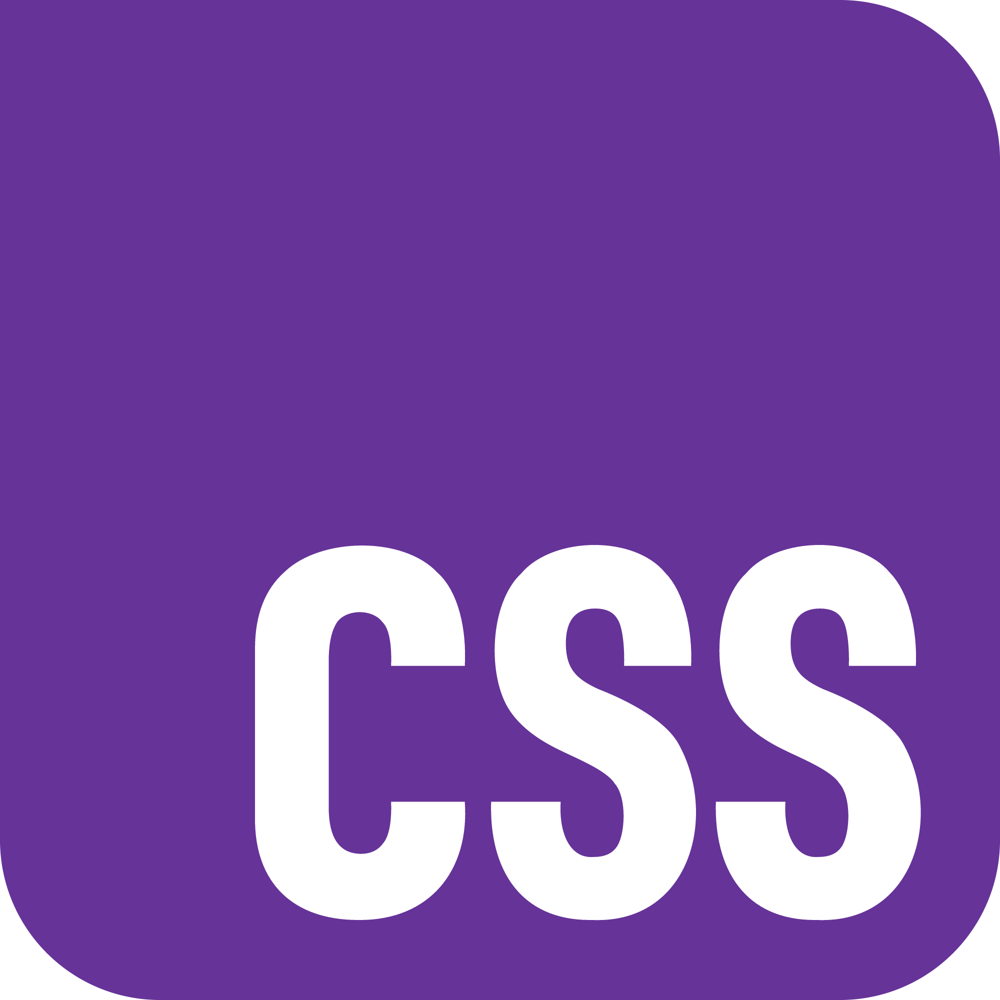
CSS
目的
授業で指定されたテーマは特にありませんでしたが、どうせなら人が抱えている課題を解決するWebサイトを制作したいと考え、現代人が特に迷いやすいと言われる「住民票の取得」に必要な情報を提供するサイトを制作することにしました。
スマートフォンで住民票の取得手続きに必要な情報へ、効率よくアクセスできる体験の提供を目的としています。
デザインプロセス
1.ユーザー理解
ペルソナ
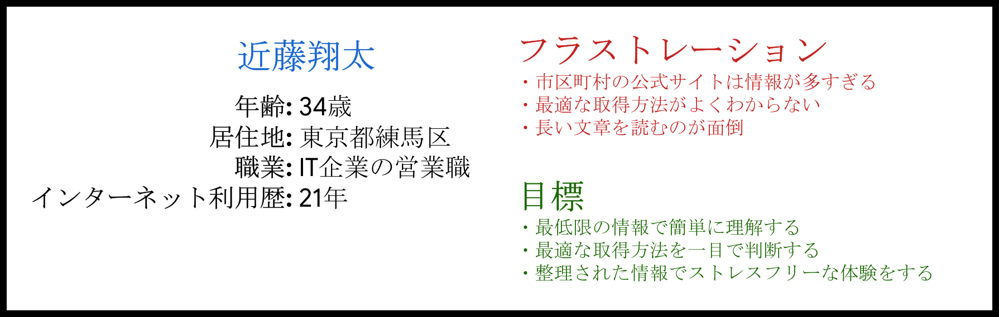
ユーザーストーリー
都市部で働く多忙な社会人として、スマートフォンを用いて住民票の取得手続きに必要な情報へ素早くアクセスしたい。なぜなら、仕事や引っ越しの準備に時間を割く必要があり、住民票の取得に無駄な時間をかけたくないからだ。
ユーザージャーニーマップ
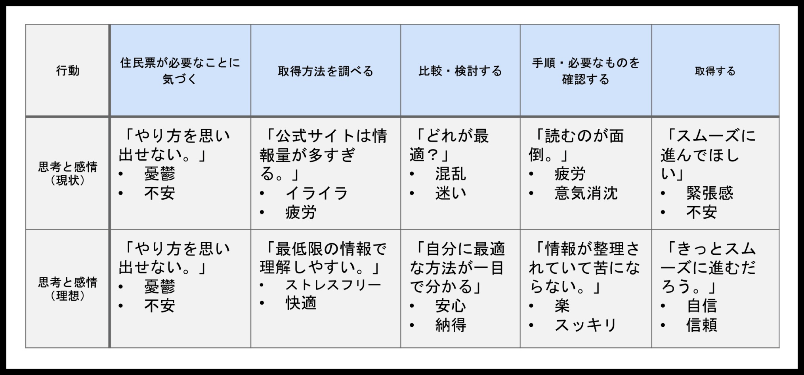
ゴールステートメント
以上を踏まえ、ゴールステートメントを作成しました。
住民票取得サイトはユーザーに対して、スマートフォンを用いて住民票の取得手続きに必要な情報へ効率よくアクセスする体験を提供する。また、時間を有効に活用できるようにすることで、多忙な社会人のストレスを軽減する。
2.サイトマップの作成
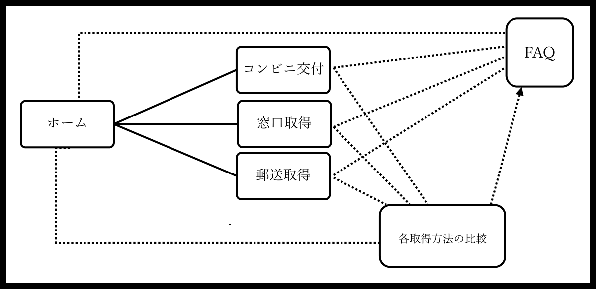
3.UI設計
ワイヤーフレーム
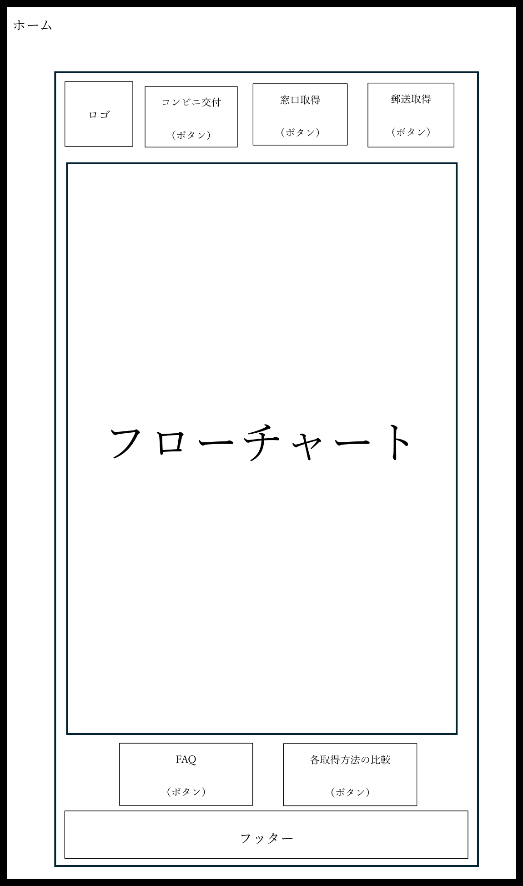
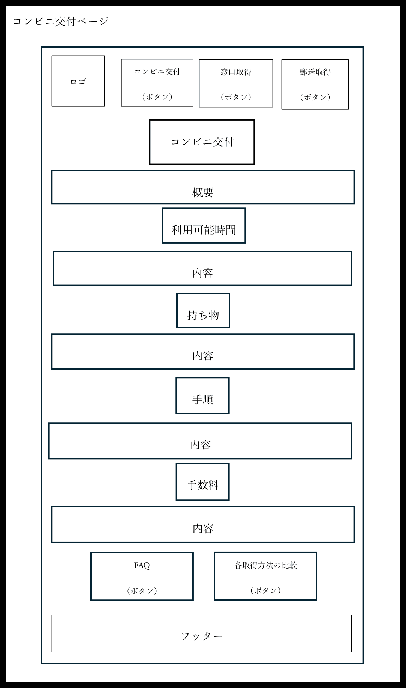
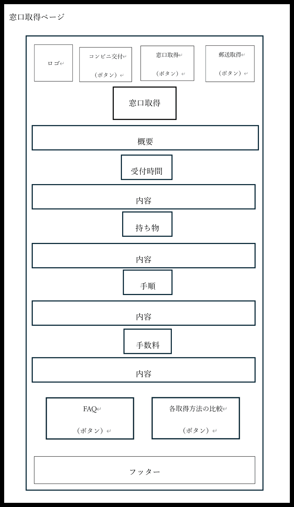
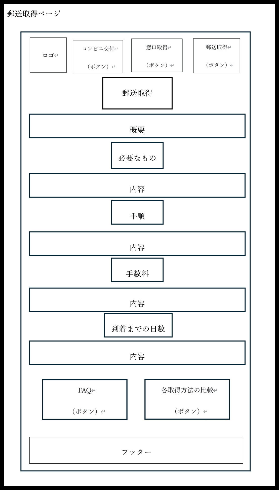
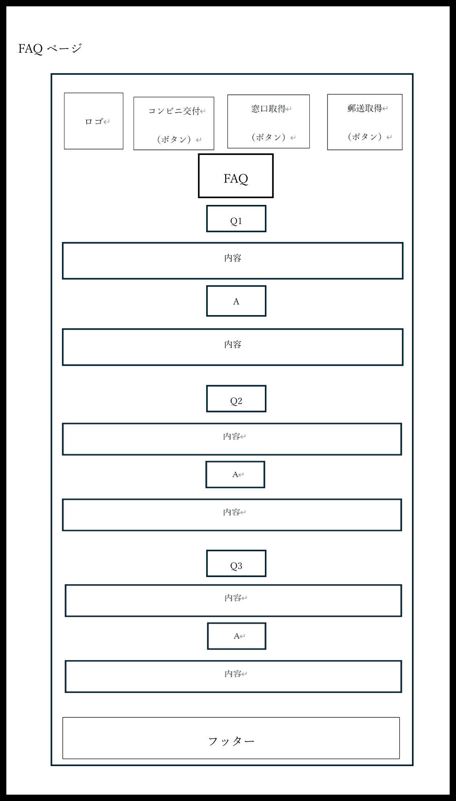
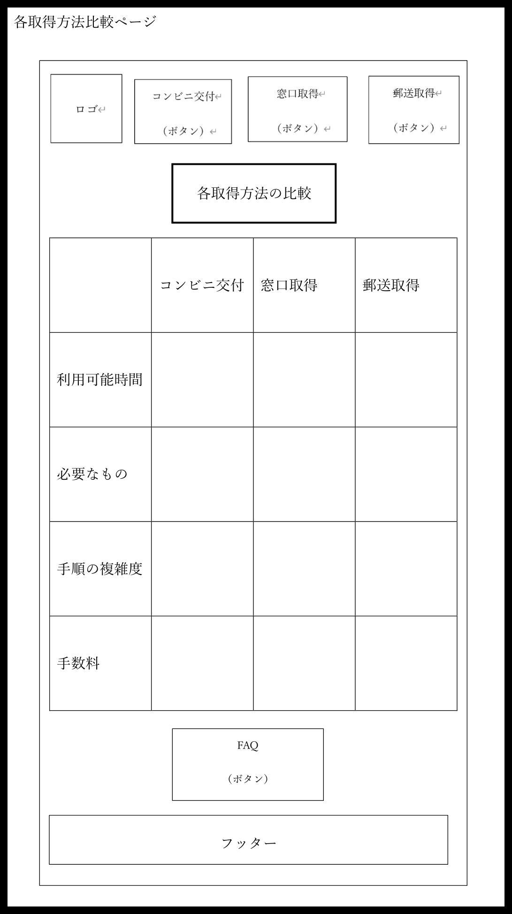
- シングルカラムレイアウトを採用することで、ユーザーを迷わせず、スマートフォンでの片手操作に最適化しています
- FAQページと各取得方法の比較ページに遷移するボタンを下部に配置することにより、ナビゲーションをシンプルにしています
- ホームには取得方法の診断フローチャートを配置することで、それぞれのユーザーに最適な取得方法を瞬時に判断できるようにしています
- 各取得方法比較ページの比較表により、慎重に判断したいユーザーのニーズも満たせるようにしています
カラー
ベースカラー#226FED
メインカラー#5C8CFF
アクセントカラー#FF8A00
- 行政系サイトのため、ブルーを基調として信頼感を出しています
- アクセントカラーには、ベースカラーの補色を利用することでメリハリをつけています
フォント
Noto Sans JP
- 可読性を重視しています。
モックアップ
モックアップを見る- 全てのページで画像を使用しないことにより、読み込みに要する時間を抑えています
- 片手操作を考慮し、ワイヤーフレームにおける下部ボタンのレイアウトを、モックアップでは縦並びに変更しました
- 下部ボタンに影をつけることで、ボタンであることを理解しやすくしています
- 取得方法比較表は、ヘッダーと偶数行の色を濃くすることで視認性を向上させています
4.コーディング
コードを見る授業で学習した基本的な記法を中心に、HTMLとCSSを用いてコーディングを行い、Webサイトとして実装しました。ボタンにアニメーションを適用し、レスポンシブにも対応させています。
コーディングでは、モックアップを作成した際に気づかなかった改善点を発見したため、改善を図りました。
Before
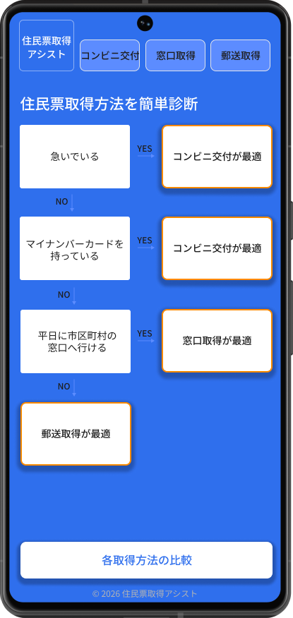
After
- 背景色にベースカラーを使用すると刺激が強くなると考え、ホワイトに変更することで刺激を抑えています
- ロゴをナビゲーションバーの隣に配置するとボタンが小さくなり、操作性と視認性が悪化すると考え、ページの最上部に単独で配置しています
獲得した学び
授業では、サイトマップの作成とコーディングのみで要件を満たしていましたが、資格などの学習で得たUXデザインの知識やスキルを活かしたいと考え、ユーザー理解やUI設計も個人的に行いました。
Webサイトは以前にも作成したことがありましたが、ユーザーの目線に立ってデザインしたことはなかったため、UXデザインを前提としたWebサイト制作を新たに経験することができました。制作を通して、何となく自己満足のデザインをするのではなく、ユーザーに与える影響を念頭に置いてデザインすることの重要性を学びました。特にUI設計の段階では、レイアウトや色、タイポグラフィなどに少しの変更を加えることで、人間の感じ方が劇的に変化することを理解しました。また、HTMLとCSSによるコーディングでは、これまで曖昧であった基礎を固め、今後の学習基盤を確立できたと感じています。
今後のWeb制作では今回得た学びを活かし、意図のある適切なUI設計によって人にやさしいデザインを心掛けていきたいと考えています。